科研工作中的生存分析
Table of Contents
引子
生存分析概述
生存分析的适用范围
- To describe the survival times of members of a group
- Life tables
- Kaplan-Meier curves
- Survival function
- Hazard function
- To compare the survival times of two or more groups
- Log-rank test
- To describe the effect of categorical or quantitative variables on survival
- Cox proportional hazards regression
- Parametric survival models
- Survival trees
- Survival random forests
生存分析术语
- 事件, Event: Death, disease occurrence, disease recurrence, recovery, or other experience of interest
- 时间, Time: The time from the beginning of an observation period (such as surgery or beginning treatment) to (i) an event, or (ii) end of the study, or (iii) loss of contact or withdrawal from the study.
- 未到重点 Censoring / Censored observation: If a subject does not have an event during the observation time, they are described as censored. The subject is censored in the sense that nothing is observed or known about that subject after the time of
- 删失数据, censoring. A censored subject may or may not have an event after the end of observation time.
- 生存函数, Survival function S(t): The probability that a subject survives longer than time t.
生存分析公式
生存函数(Survival Function)

其中, 其中 T 是死亡时间, S(t) 表示死亡时间 T 晚于时间 t 的概率, 很容易得到  , 生存函数是递减函数.
, 生存函数是递减函数.
生存分布函数(lifetime distribution function)和生存分布密度函数

如果 F 是可微分的, 其微分函数 f(t) 是其密度函数

The function f is sometimes called the event density; it is the rate of death or failure events per unit time.

![\begin{equation}
s(t) = S'(t) = \frac{d}{dt}S(t) = \frac{d}{dt} \int_t^{\infty}f(u)du = \frac{d}{dt} [1-F(t)] = -f(t)
\end{equation}](ltxpng/Survival%20analysis_768dafe08d6cfee6cd5e97cd17b1544f83fa3e82.png)
In other fields, such as statistical physics, the survival event density function is known as the first passage time density.
危险函数和累计危险函数(Hazard function and cumulative hazard function)

表示一个已经存活时间 t 的病人瞬间死亡的概率
Force of mortality is a synonym of hazard function which is used particularly in demography and actuarial science, where it is denoted by μ. The term hazard rate is another synonym.
The force of mortality of the survival function is defined as

Any function h is a hazard function if and only if it satisfies the following properties:


生存函数之间的量化关系
Future lifetime at a given time t0 is the time remaining until death, given survival to age t0. Thus, it is T-t0 in the present notation. The expected future lifetime is the expected value of future lifetime. The probability of death at or before age t0+t, given survival until age t0, is just

参数拟合
参数检验
Survival models can be usefully viewed as ordinary regression models in which the response variable is time. However, computing the likelihood function (needed for fitting parameters or making other kinds of inferences) is complicated by the censoring. The likelihood function for a survival model, in the presence of censored data, is formulated as follows. By definition the likelihood function is the conditional probability of the data given the parameters of the model. It is customary to assume that the data are independent given the parameters. Then the likelihood function is the product of the likelihood of each datum. It is convenient to partition the data into four categories: uncensored, left censored, right censored, and interval censored. These are denoted "unc.", "l.c.", "r.c.", and "i.c." in the equation below.

非参数检验
The Kaplan-Meier estimator can be used to estimate the survival function. The Nelson–Aalen estimator can be used to provide a non-parametric estimate of the cumulative hazard rate function.
Kaplan-Meier 生存分析
加载数据
用 survival 中的 lung 数据进行 K-M 分析
首先加载数据
library(survival)
library(survminer)
data(lung)
head(lung)
inst time status age sex ph.ecog ph.karno pat.karno meal.cal wt.loss 1 3 306 2 74 1 1 90 100 1175 NA 2 3 455 2 68 1 0 90 90 1225 15 3 3 1010 1 56 1 0 90 90 NA 15 4 5 210 2 57 1 1 90 60 1150 11 5 1 883 2 60 1 0 100 90 NA 0 6 12 1022 1 74 1 1 50 80 513 0
inst: Institution code time: Survival time in days status: censoring status 1=censored, 2=dead age: Age in years sex: Male=1 Female=2 ph.ecog: ECOG performance score (0=good 5=dead) ph.karno: Karnofsky performance score (bad=0-good=100) rated by physician pat.karno: Karnofsky performance score as rated by patient meal.cal: Calories consumed at meals wt.loss: Weight loss in last six months
计算生存曲线
fit <- survfit(Surv(time, status) ~ sex, data = lung)
print(fit)
Call: survfit(formula = Surv(time, status) ~ sex, data = lung)
n events median 0.95LCL 0.95UCL
sex=1 138 112 270 212 310
sex=2 90 53 426 348 550
print 函数简单列出了两组的区别，可以用 summary 函数查看详细值
summary(fit)
Call: survfit(formula = Surv(time, status) ~ sex, data = lung)
sex=1
time n.risk n.event survival std.err lower 95% CI upper 95% CI
11 138 3 0.9783 0.0124 0.9542 1.000
12 135 1 0.9710 0.0143 0.9434 0.999
13 134 2 0.9565 0.0174 0.9231 0.991
15 132 1 0.9493 0.0187 0.9134 0.987
26 131 1 0.9420 0.0199 0.9038 0.982
30 130 1 0.9348 0.0210 0.8945 0.977
31 129 1 0.9275 0.0221 0.8853 0.972
53 128 2 0.9130 0.0240 0.8672 0.961
54 126 1 0.9058 0.0249 0.8583 0.956
59 125 1 0.8986 0.0257 0.8496 0.950
60 124 1 0.8913 0.0265 0.8409 0.945
65 123 2 0.8768 0.0280 0.8237 0.933
71 121 1 0.8696 0.0287 0.8152 0.928
81 120 1 0.8623 0.0293 0.8067 0.922
88 119 2 0.8478 0.0306 0.7900 0.910
92 117 1 0.8406 0.0312 0.7817 0.904
93 116 1 0.8333 0.0317 0.7734 0.898
95 115 1 0.8261 0.0323 0.7652 0.892
105 114 1 0.8188 0.0328 0.7570 0.886
107 113 1 0.8116 0.0333 0.7489 0.880
110 112 1 0.8043 0.0338 0.7408 0.873
116 111 1 0.7971 0.0342 0.7328 0.867
118 110 1 0.7899 0.0347 0.7247 0.861
131 109 1 0.7826 0.0351 0.7167 0.855
132 108 2 0.7681 0.0359 0.7008 0.842
135 106 1 0.7609 0.0363 0.6929 0.835
142 105 1 0.7536 0.0367 0.6851 0.829
144 104 1 0.7464 0.0370 0.6772 0.823
147 103 1 0.7391 0.0374 0.6694 0.816
156 102 2 0.7246 0.0380 0.6538 0.803
163 100 3 0.7029 0.0389 0.6306 0.783
166 97 1 0.6957 0.0392 0.6230 0.777
170 96 1 0.6884 0.0394 0.6153 0.770
175 94 1 0.6811 0.0397 0.6076 0.763
176 93 1 0.6738 0.0399 0.5999 0.757
177 92 1 0.6664 0.0402 0.5922 0.750
179 91 2 0.6518 0.0406 0.5769 0.736
180 89 1 0.6445 0.0408 0.5693 0.730
181 88 2 0.6298 0.0412 0.5541 0.716
183 86 1 0.6225 0.0413 0.5466 0.709
189 83 1 0.6150 0.0415 0.5388 0.702
197 80 1 0.6073 0.0417 0.5309 0.695
202 78 1 0.5995 0.0419 0.5228 0.687
207 77 1 0.5917 0.0420 0.5148 0.680
210 76 1 0.5839 0.0422 0.5068 0.673
212 75 1 0.5762 0.0424 0.4988 0.665
218 74 1 0.5684 0.0425 0.4909 0.658
222 72 1 0.5605 0.0426 0.4829 0.651
223 70 1 0.5525 0.0428 0.4747 0.643
229 67 1 0.5442 0.0429 0.4663 0.635
230 66 1 0.5360 0.0431 0.4579 0.627
239 64 1 0.5276 0.0432 0.4494 0.619
246 63 1 0.5192 0.0433 0.4409 0.611
267 61 1 0.5107 0.0434 0.4323 0.603
269 60 1 0.5022 0.0435 0.4238 0.595
270 59 1 0.4937 0.0436 0.4152 0.587
283 57 1 0.4850 0.0437 0.4065 0.579
284 56 1 0.4764 0.0438 0.3979 0.570
285 54 1 0.4676 0.0438 0.3891 0.562
286 53 1 0.4587 0.0439 0.3803 0.553
288 52 1 0.4499 0.0439 0.3716 0.545
291 51 1 0.4411 0.0439 0.3629 0.536
301 48 1 0.4319 0.0440 0.3538 0.527
303 46 1 0.4225 0.0440 0.3445 0.518
306 44 1 0.4129 0.0440 0.3350 0.509
310 43 1 0.4033 0.0441 0.3256 0.500
320 42 1 0.3937 0.0440 0.3162 0.490
329 41 1 0.3841 0.0440 0.3069 0.481
337 40 1 0.3745 0.0439 0.2976 0.471
353 39 2 0.3553 0.0437 0.2791 0.452
363 37 1 0.3457 0.0436 0.2700 0.443
364 36 1 0.3361 0.0434 0.2609 0.433
371 35 1 0.3265 0.0432 0.2519 0.423
387 34 1 0.3169 0.0430 0.2429 0.413
390 33 1 0.3073 0.0428 0.2339 0.404
394 32 1 0.2977 0.0425 0.2250 0.394
428 29 1 0.2874 0.0423 0.2155 0.383
429 28 1 0.2771 0.0420 0.2060 0.373
442 27 1 0.2669 0.0417 0.1965 0.362
455 25 1 0.2562 0.0413 0.1868 0.351
457 24 1 0.2455 0.0410 0.1770 0.341
460 22 1 0.2344 0.0406 0.1669 0.329
477 21 1 0.2232 0.0402 0.1569 0.318
519 20 1 0.2121 0.0397 0.1469 0.306
524 19 1 0.2009 0.0391 0.1371 0.294
533 18 1 0.1897 0.0385 0.1275 0.282
558 17 1 0.1786 0.0378 0.1179 0.270
567 16 1 0.1674 0.0371 0.1085 0.258
574 15 1 0.1562 0.0362 0.0992 0.246
583 14 1 0.1451 0.0353 0.0900 0.234
613 13 1 0.1339 0.0343 0.0810 0.221
624 12 1 0.1228 0.0332 0.0722 0.209
643 11 1 0.1116 0.0320 0.0636 0.196
655 10 1 0.1004 0.0307 0.0552 0.183
689 9 1 0.0893 0.0293 0.0470 0.170
707 8 1 0.0781 0.0276 0.0390 0.156
791 7 1 0.0670 0.0259 0.0314 0.143
814 5 1 0.0536 0.0239 0.0223 0.128
883 3 1 0.0357 0.0216 0.0109 0.117
sex=2
time n.risk n.event survival std.err lower 95% CI upper 95% CI
5 90 1 0.9889 0.0110 0.9675 1.000
60 89 1 0.9778 0.0155 0.9478 1.000
61 88 1 0.9667 0.0189 0.9303 1.000
62 87 1 0.9556 0.0217 0.9139 0.999
79 86 1 0.9444 0.0241 0.8983 0.993
81 85 1 0.9333 0.0263 0.8832 0.986
95 83 1 0.9221 0.0283 0.8683 0.979
107 81 1 0.9107 0.0301 0.8535 0.972
122 80 1 0.8993 0.0318 0.8390 0.964
145 79 2 0.8766 0.0349 0.8108 0.948
153 77 1 0.8652 0.0362 0.7970 0.939
166 76 1 0.8538 0.0375 0.7834 0.931
167 75 1 0.8424 0.0387 0.7699 0.922
182 71 1 0.8305 0.0399 0.7559 0.913
186 70 1 0.8187 0.0411 0.7420 0.903
194 68 1 0.8066 0.0422 0.7280 0.894
199 67 1 0.7946 0.0432 0.7142 0.884
201 66 2 0.7705 0.0452 0.6869 0.864
208 62 1 0.7581 0.0461 0.6729 0.854
226 59 1 0.7452 0.0471 0.6584 0.843
239 57 1 0.7322 0.0480 0.6438 0.833
245 54 1 0.7186 0.0490 0.6287 0.821
268 51 1 0.7045 0.0501 0.6129 0.810
285 47 1 0.6895 0.0512 0.5962 0.798
293 45 1 0.6742 0.0523 0.5791 0.785
305 43 1 0.6585 0.0534 0.5618 0.772
310 42 1 0.6428 0.0544 0.5447 0.759
340 39 1 0.6264 0.0554 0.5267 0.745
345 38 1 0.6099 0.0563 0.5089 0.731
348 37 1 0.5934 0.0572 0.4913 0.717
350 36 1 0.5769 0.0579 0.4739 0.702
351 35 1 0.5604 0.0586 0.4566 0.688
361 33 1 0.5434 0.0592 0.4390 0.673
363 32 1 0.5265 0.0597 0.4215 0.658
371 30 1 0.5089 0.0603 0.4035 0.642
426 26 1 0.4893 0.0610 0.3832 0.625
433 25 1 0.4698 0.0617 0.3632 0.608
444 24 1 0.4502 0.0621 0.3435 0.590
450 23 1 0.4306 0.0624 0.3241 0.572
473 22 1 0.4110 0.0626 0.3050 0.554
520 19 1 0.3894 0.0629 0.2837 0.534
524 18 1 0.3678 0.0630 0.2628 0.515
550 15 1 0.3433 0.0634 0.2390 0.493
641 11 1 0.3121 0.0649 0.2076 0.469
654 10 1 0.2808 0.0655 0.1778 0.443
687 9 1 0.2496 0.0652 0.1496 0.417
705 8 1 0.2184 0.0641 0.1229 0.388
728 7 1 0.1872 0.0621 0.0978 0.359
731 6 1 0.1560 0.0590 0.0743 0.328
735 5 1 0.1248 0.0549 0.0527 0.295
765 3 1 0.0832 0.0499 0.0257 0.270
summary(fit)$table
records n.max n.start events *rmean *se(rmean) median 0.95LCL 0.95UCL
sex=1 138 138 138 112 325.0663 22.59845 270 212 310
sex=2 90 90 90 53 458.2757 33.78530 426 348 550
可视化生存曲线
可以用 ggsurvplot 进行生存曲线可视化，即画 K-M 曲线
# Change color, linetype by strata, risk.table color by strata
ggsurvplot(fit,
pval = TRUE, conf.int = TRUE,
risk.table = TRUE, # Add risk table
risk.table.col = "strata", # Change risk table color by groups
linetype = "strata", # Change line type by groups
surv.median.line = "hv", # Specify median survival
ggtheme = theme_bw(), # Change ggplot2 theme
palette = c("#E7B800", "#2E9FDF"))
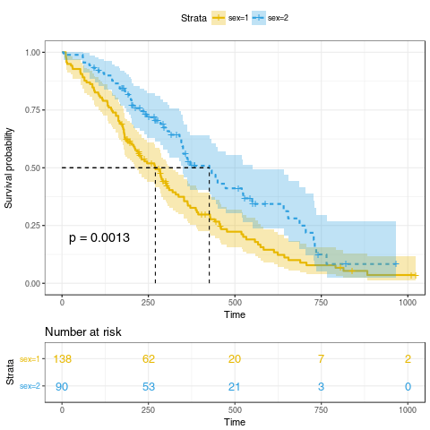
配置图像
ggsurvplot(
fit, # survfit object with calculated statistics.
pval = TRUE, # show p-value of log-rank test.
conf.int = TRUE, # show confidence intervals for
# point estimaes of survival curves.
conf.int.style = "step", # customize style of confidence intervals
xlab = "Time in days", # customize X axis label.
break.time.by = 200, # break X axis in time intervals by 200.
ggtheme = theme_light(), # customize plot and risk table with a theme.
risk.table = "abs_pct", # absolute number and percentage at risk.
risk.table.y.text.col = T,# colour risk table text annotations.
risk.table.y.text = FALSE,# show bars instead of names in text annotations
# in legend of risk table.
ncensor.plot = TRUE, # plot the number of censored subjects at time t
surv.median.line = "hv", # add the median survival pointer.
legend.labs =
c("Male", "Female"), # change legend labels.
palette =
c("#E7B800", "#2E9FDF") # custom color palettes.
)
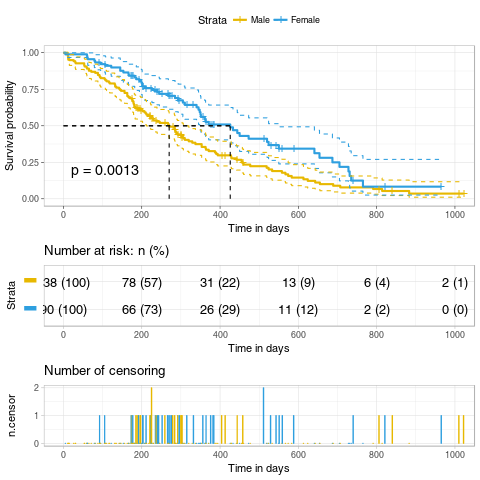
X 轴截断
ggsurvplot(fit,
conf.int = TRUE,
risk.table.col = "strata", # Change risk table color by groups
ggtheme = theme_bw(), # Change ggplot2 theme
palette = c("#E7B800", "#2E9FDF"),
xlim = c(0, 600))
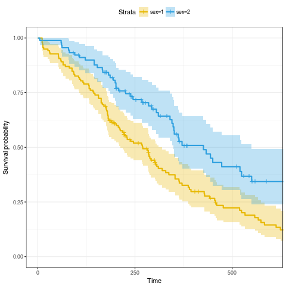
累计危险事件画图
ggsurvplot(fit,
conf.int = TRUE,
risk.table.col = "strata", # Change risk table color by groups
ggtheme = theme_bw(), # Change ggplot2 theme
palette = c("#E7B800", "#2E9FDF"),
fun = "event")
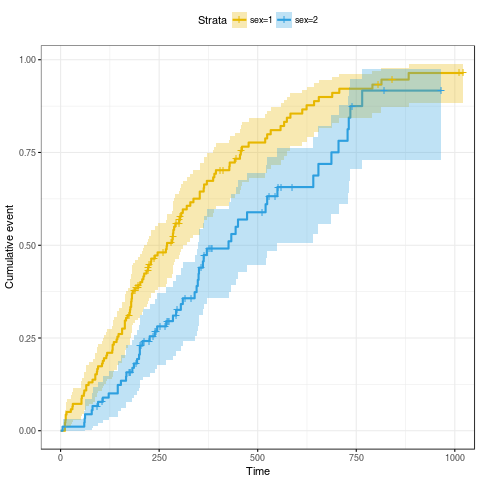
累计危险率画图
ggsurvplot(fit,
conf.int = TRUE,
risk.table.col = "strata", # Change risk table color by groups
ggtheme = theme_bw(), # Change ggplot2 theme
palette = c("#E7B800", "#2E9FDF"),
fun = "cumhaz")
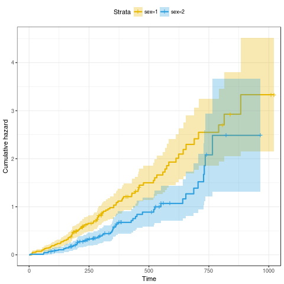
K-M 生存表
可以用 summary 函数去看生存表格, 或者更强大的 surv_summary 去看
library(survival)
library(survminer)
data(lung)
fit <- survfit(Surv(time, status) ~ sex, data = lung)
head(surv_summary(fit))
time n.risk n.event n.censor surv std.err upper lower strata sex 1 11 138 3 0 0.9782609 0.01268978 1.0000000 0.9542301 sex=1 1 2 12 135 1 0 0.9710145 0.01470747 0.9994124 0.9434235 sex=1 1 3 13 134 2 0 0.9565217 0.01814885 0.9911586 0.9230952 sex=1 1 4 15 132 1 0 0.9492754 0.01967768 0.9866017 0.9133612 sex=1 1 5 26 131 1 0 0.9420290 0.02111708 0.9818365 0.9038355 sex=1 1 6 30 130 1 0 0.9347826 0.02248469 0.9768989 0.8944820 sex=1 1 Warning message: In .get_data(x, data = data) : The `data` argument is not provided. Data will be extracted from model fit.
Log-rank 检验
可以用 survdiff() 函数检验组间差异
surv_diff <- survdiff(Surv(time, status) ~ sex, data = lung)
surv_diff
Call:
survdiff(formula = Surv(time, status) ~ sex, data = lung)
N Observed Expected (O-E)^2/E (O-E)^2/V
sex=1 138 112 91.6 4.55 10.3
sex=2 90 53 73.4 5.68 10.3
Chisq= 10.3 on 1 degrees of freedom, p= 0.00131
明显, p < 0.01, 说明两组生存率有差异.
多因素生存分析
用 colon 数据集进行多因素分析拟合
library(survival)
library(survminer)
data(colon)
fit2 <- survfit( Surv(time, status) ~ sex + rx + adhere, data = colon )
head(surv_summary(fit2))
time n.risk n.event n.censor surv std.err upper lower strata sex rx adhere 1 72 250 1 0 0.996 0.004008024 1.0000000 0.9882065 sex=0, rx=Obs , adhere=0 0 Obs 0 2 79 249 1 0 0.992 0.005679618 1.0000000 0.9810184 sex=0, rx=Obs , adhere=0 0 Obs 0 3 80 248 1 0 0.988 0.006970150 1.0000000 0.9745945 sex=0, rx=Obs , adhere=0 0 Obs 0 4 85 247 1 0 0.984 0.008064778 0.9996773 0.9685685 sex=0, rx=Obs , adhere=0 0 Obs 0 5 98 246 1 0 0.980 0.009035079 0.9975088 0.9627985 sex=0, rx=Obs , adhere=0 0 Obs 0 6 99 245 2 0 0.972 0.010734353 0.9926665 0.9517638 sex=0, rx=Obs , adhere=0 0 Obs 0 Warning message: In .get_data(x, data = data) : The `data` argument is not provided. Data will be extracted from model fit.
多因素可视化
# Plot survival curves by sex and facet by rx and adhere
ggsurv <- ggsurvplot(fit2, fun = "event", conf.int = TRUE,
ggtheme = theme_bw())
ggsurv$plot +theme_bw() + theme (legend.position = "right")
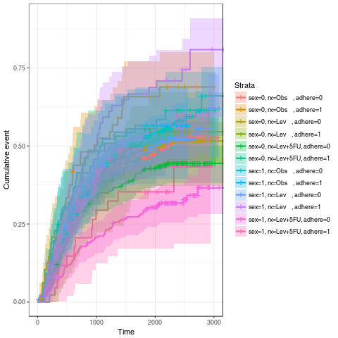
Cox PH 模型
Cox 分析概述
利用 Cox 回归分析，可以对多变量进行分析，而且可以对时间有关的变量进行分析


单因素 Cox 模型建立
可以用 coxph() 函数来建立模型
library(survival)
library(survminer)
data(lung)
res.cox <- coxph(Surv(time, status) ~ sex, data = lung)
res.cox
Call:
coxph(formula = Surv(time, status) ~ sex, data = lung)
coef exp(coef) se(coef) z p
sex -0.531 0.588 0.167 -3.18 0.0015
Likelihood ratio test=10.6 on 1 df, p=0.00111
n= 228, number of events= 165
summary(res.cox)
Call:
coxph(formula = Surv(time, status) ~ sex, data = lung)
n= 228, number of events= 165
coef exp(coef) se(coef) z Pr(>|z|)
sex -0.5310 0.5880 0.1672 -3.176 0.00149
exp(coef) exp(-coef) lower .95 upper .95
sex 0.588 1.701 0.4237 0.816
Concordance= 0.579 (se = 0.022 )
Rsquare= 0.046 (max possible= 0.999 )
Likelihood ratio test= 10.63 on 1 df, p=0.001111
Wald test = 10.09 on 1 df, p=0.001491
Score (logrank) test = 10.33 on 1 df, p=0.001312

检验多变量对生存率的影响
covariates <- c("age", "sex", "ph.karno", "ph.ecog", "wt.loss")
univ_formulas <- sapply(covariates,
function(x) as.formula(paste('Surv(time, status)~', x)))
univ_models <- lapply(univ_formulas, function(x){coxph(x, data = lung)})
# Extract data
univ_results <- lapply(univ_models,
function(x){
x <- summary(x)
p.value<-signif(x$wald["pvalue"], digits=2)
wald.test<-signif(x$wald["test"], digits=2)
beta<-signif(x$coef[1], digits=2);#coeficient beta
HR <-signif(x$coef[2], digits=2);#exp(beta)
HR.confint.lower <- signif(x$conf.int[,"lower .95"], 2)
HR.confint.upper <- signif(x$conf.int[,"upper .95"],2)
HR <- paste0(HR, " (",
HR.confint.lower, "-", HR.confint.upper, ")")
res<-c(beta, HR, wald.test, p.value)
names(res)<-c("beta", "HR (95% CI for HR)", "wald.test",
"p.value")
return(res)
#return(exp(cbind(coef(x),confint(x))))
})
res <- t(as.data.frame(univ_results, check.names = FALSE))
as.data.frame(res)
beta HR (95% CI for HR) wald.test p.value
age 0.019 1 (1-1) 4.1 0.042
sex -0.53 0.59 (0.42-0.82) 10 0.0015
ph.karno -0.016 0.98 (0.97-1) 7.9 0.005
ph.ecog 0.48 1.6 (1.3-2) 18 2.7e-05
wt.loss 0.0013 1 (0.99-1) 0.05 0.83
From the output above,
- The variables sex, age and ph.ecog have highly statistically significant coefficients, while the coefficient for ph.karno is not significant.
- age and ph.ecog have positive beta coefficients, while sex has a negative coefficient. Thus, older age and higher ph.ecog are associated with poorer survival, whereas being female (sex=2) is associated with better survival.
多因素 Cox 回归分析
res.cox2 <- coxph(Surv(time, status) ~ age + sex + ph.ecog, data = lung)
summary(res.cox2)
Call:
coxph(formula = Surv(time, status) ~ age + sex + ph.ecog, data = lung)
n= 227, number of events= 164
(1 observation deleted due to missingness)
coef exp(coef) se(coef) z Pr(>|z|)
age 0.011067 1.011128 0.009267 1.194 0.232416
sex -0.552612 0.575445 0.167739 -3.294 0.000986
ph.ecog 0.463728 1.589991 0.113577 4.083 4.45e-05
exp(coef) exp(-coef) lower .95 upper .95
age 1.0111 0.9890 0.9929 1.0297
sex 0.5754 1.7378 0.4142 0.7994
ph.ecog 1.5900 0.6289 1.2727 1.9864
Concordance= 0.637 (se = 0.026 )
Rsquare= 0.126 (max possible= 0.999 )
Likelihood ratio test= 30.5 on 3 df, p=1.083e-06
Wald test = 29.93 on 3 df, p=1.428e-06
Score (logrank) test = 30.5 on 3 df, p=1.083e-06

Cox 回归可视化
简单可视化
fit.cox <- survfit(res.cox2, data = lung)
ggsurvplot(fit.cox, color = "#2E9FDF", ggtheme = theme_minimal())
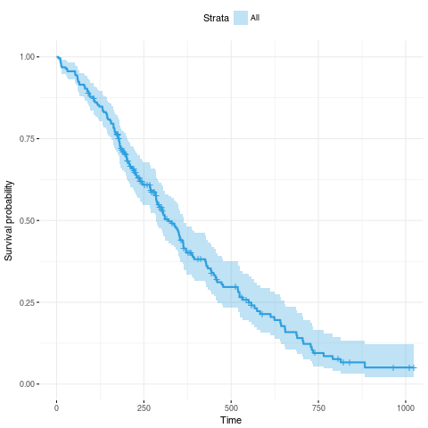
按照性别进行分组可视化
sex_df <- with(lung,
data.frame(sex = c(1, 2),
age = rep(mean(age, na.rm = TRUE), 2),
ph.ecog = c(1, 1)
)
)
res.cox2 <- coxph(Surv(time, status) ~ age + sex + ph.ecog, data = lung)
fit.cox2 <- survfit(res.cox2, newdata = sex_df)
ggsurvplot(fit.cox2, conf.int = TRUE, legend.labs=c("Sex=1", "Sex=2"), data = sex_df,
ggtheme = theme_minimal())
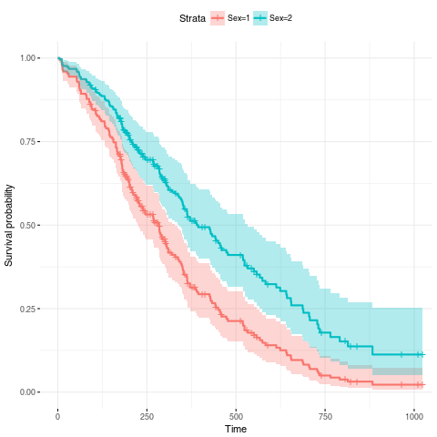
Cox 模型假设检验
用 cox.zph() 函数检验比例危险的假设
library(survival)
library(survminer)
data(lung)
res.cox <- coxph(Surv(time, status) ~ sex + age + wt.loss, data = lung)
test.ph <- cox.zph(res.cox)
test.ph
rho chisq p
sex 0.1265 2.349 0.125
age -0.0483 0.378 0.538
wt.loss 0.0126 0.024 0.877
GLOBAL NA 2.846 0.416
From the output above, the test is not statistically significant for each of the covariates, and the global test is also not statistically significant. Therefore, we can assume the proportional hazards.
可以用 ggcoxzph() 画出每个因素的检验
ggcoxzph(test.ph)

可以用 ggcoxdiagnostics() 画出 influential observations
Specifying the argument type = “dfbeta”, plots the estimated changes in the regression coefficients upon deleting each observation in turn; likewise, type=“dfbetas” produces the estimated changes in the coefficients divided by their standard errors.
ggcoxdiagnostics(res.cox, type = "dfbeta",
linear.predictions = FALSE, ggtheme = theme_bw())
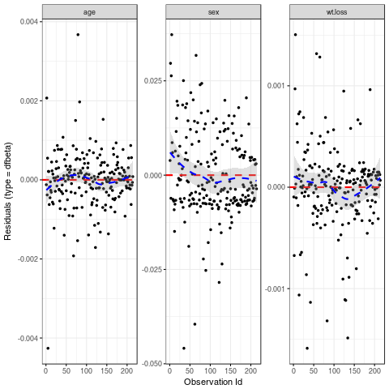
(Index plots of dfbeta for the Cox regression of time to death on age, sex and wt.loss)
The above index plots show that comparing the magnitudes of the largest dfbeta values to the regression coefficients suggests that none of the observations is terribly influential individually, even though some of the dfbeta values for age and wt.loss are large compared with the others.
It’s also possible to check outliers by visualizing the deviance residuals. The deviance residual is a normalized transform of the martingale residual. These residuals should be roughtly symmetrically distributed about zero with a standard deviation of 1.
- Positive values correspond to individuals that “died too soon” compared to expected survival times.
- Negative values correspond to individual that “lived too long”.
- Very large or small values are outliers, which are poorly predicted by the model.
Example of deviance residuals:
ggcoxdiagnostics(res.cox, type = "deviance",
linear.predictions = FALSE, ggtheme = theme_bw())
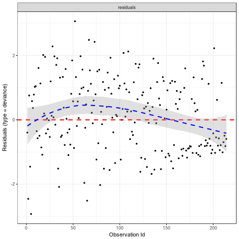
Testing non linearity
Often, we assume that continuous covariates have a linear form. However, this assumption should be checked.
Plotting the Martingale residuals against continuous covariates is a common approach used to detect nonlinearity or, in other words, to assess the functional form of a covariate. For a given continuous covariate, patterns in the plot may suggest that the variable is not properly fit.
Nonlinearity is not an issue for categorical variables, so we only examine plots of martingale residuals and partial residuals against a continuous variable.
Martingale residuals may present any value in the range (-INF, +1):
- A value of martinguale residuals near 1 represents individuals that “died too soon”,
- and large negative values correspond to individuals that “lived too long”.
To assess the functional form of a continuous variable in a Cox proportional hazards model, we’ll use the function ggcoxfunctional() [in the survminer R package].
The function ggcoxfunctional() displays graphs of continuous covariates against martingale residuals of null cox proportional hazards model. This might help to properly choose the functional form of continuous variable in the Cox model. Fitted lines with lowess function should be linear to satisfy the Cox proportional hazards model assumptions.
ggcoxfunctional(Surv(time, status) ~ age + log(age) + sqrt(age), data = lung)
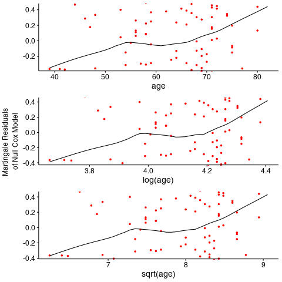
根据上图所示, 显然是非线性的
Creative Commons licensing
TITLE: 科研工作中的生存分析
AUTHOR: lengyueyang
DATE: 2018-01-15 19:26:52 UTC+08:00
UPDATED:
LICENSE: The blog is licensed under a Creative Commons Attribution-NonCommercial-ShareAlike 4.0 International License, commercial use is not allowed, for any reprint, please indicate address and signature.

Comments
Comments powered by Disqus